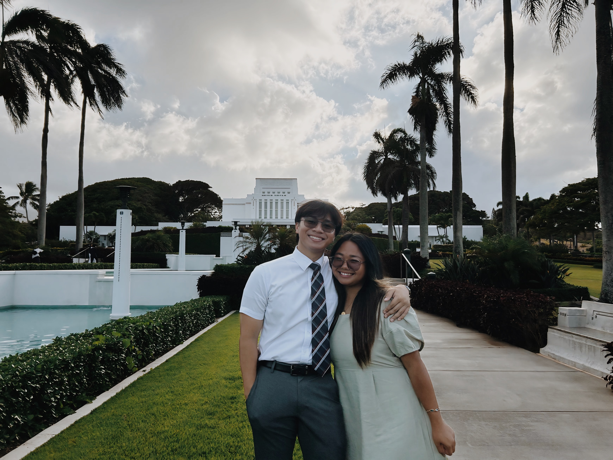

The Restoration and Gathering of Israel: A Journey of Faith and Unity
Home
Helaman
Missionaries
Dane & Jerzel
Lex

Lex Marcaida & Me
What does the restoration and gathering of Israel mean to you personally?
How has learning about the restoration and gathering of Israel influenced your faith?
Your browser does not support the video tag.